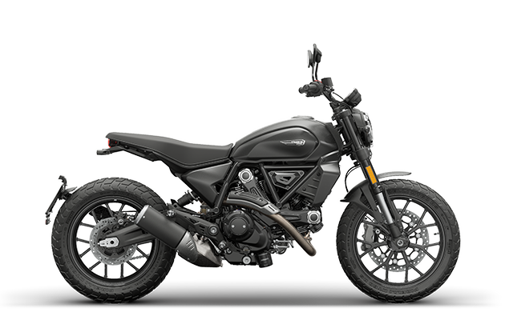

Ducati Corse Article Talk Read Edit View history Tools Appearance hide Text Small Standard Large Width Standard Wide Color (beta) Automatic Light Dark From Wikipedia, the free encyclopedia This article is about the motorcycle racing division.. For the company behind the Ducati Corse, see Ducati. For the conglomerate of the same name, see Ducati (company). Ducati Corse Company type Division Founded 1999; 26 years ago Headquarters Bologna, Italy Key people General Manager: Luigi Dall'Igna[1] Sporting Director: Mauro Grassilli[2] General Manager Off-Road: Paolo Ciabatti[2] MotoGP Race Team Manager: Davide Tardozzi Technical Director Davide Barana[3][4] Parent Ducati Website www.ducati.com/ww/en/home Ducati Corse (Italian pronunciation: [duˈkaːti]) is the racing division of Ducati. A Ducati racing motorcycle from 1968 Organization The company is split into four departments with 100+ employees working for the Ducati Corse, almost 10% of the Ducati Motor Holding S.p.A. workforce.[5] Ownership Between 1998 and 2004 the racing division existed as a subsidiary company named Ducati Corse S.r.l., fully owned by Ducati Motor Holding.[6] Technical research and development Technical research and development is composed of two teams responsible for the design and development of the motorcycles that compete in the MotoGP and Superbike championships. Sporting activities The sporting activities department is responsible for the factory teams that take part in the MotoGP class of Grand Prix motorcycle racing, the Superbike and Supersport, MotoE world championships, together with national championships.[7] Commercial activities The commercial activities department is responsible for providing private teams with motorcycles and spare parts. It also provides consultancy services and technical assistance to Ducati privateers take part in the Superbike World Championship and in national Superbike championships. Marketing and communication The marketing and communication department's goal is to increase and manage the Ducati brand image in racing. It is also responsible for Ducati Corse official merchandising line. History Ducati's history with motorsport began with speed records on Cucciolo motorized bicycle factory racers in 1951, followed in 1954 with bringing in Fabio Taglioni to found a road-racing program with the 100 Gran Sport.[8] MotoGP Ducati MotoGP 2025 name Ducati Lenovo Team Base Borgo Panigale, Bologna, Italy Principal General Manager: Luigi Dall'Igna Project Director: Mauro Grassilli MotoGP Race Team Manager: Davide Tardozzi Rider(s) MotoGP: 63. Francesco Bagnaia 93. Marc Marquez 51. Michele Pirro (test rider) Motorcycle Ducati Desmosedici GP25 Tyres Michelin Constructors' Championships MotoGP: 7 2007 2020 2021 2022 2023 2024 2025 Riders' Championships MotoGP: 4 2007: Casey Stoner 2022, 2023: Francesco Bagnaia 2025: Marc Márquez Teams' Championships MotoGP: 5 2007 2021 2022 2024 2025 When the MotoGP technical rules changed in the 2002 season, giving priority to machinery with four-stroke 990 cc engines, Ducati decided to return to MotoGP in 2003.[9] Bayliss-Capirossi era Troy Bayliss and Loris Capirossi competed in all rounds of the 2003 MotoGP championship. Capirossi got a podium in the opening round of the championship in Japan and won the Catalan Grand Prix in Barcelona. Capirossi finished fourth in the final championship standings and Bayliss sixth; Ducati finished second overall in the Manufacturers' standings. A large part of the 2004 season went by before the bike became competitive, but the season concluded with both riders on the podium. Checa-Capirossi era In the 2005 season, Bayliss was replaced by Spain's Carlos Checa with Ducati switching tyre suppliers to Bridgestone. Capirossi took two wins at Twin Ring Motegi and Sepang, while Checa scored a brace of podium finishes. A turbulent 2006 Spanish rider Sete Gibernau replaced Checa for the 2006 season. The team took its first win of 2006 in the opening round at Jerez, followed by a podium in Qatar. Capirossi led the championship for a short while, but at the start of the Catalan Grand Prix in Barcelona, Capirossi's bike collided with Gibernau's. Both riders ended up injured and in hospital, with Gibernau sustaining a broken collar bone. Capirossi struggled at the Dutch TT race a week later, while Gibernau was replaced by German Alex Hofmann for several rounds after undergoing additional surgery. With Gibernau also sidelined for the final round of the season at Valencia, Ducati recalled Bayliss, who was recently crowned Superbike World champion. Bayliss won the race, his first MotoGP victory, with Capirossi taking second place for the first Ducati 1–2 finish. The Stoner era While, for the 2007 season, MotoGP reduced the allowed engine displacement, Ducati started development of its 800 cc motorcycle extremely early. According to racing chief Filippo Preziosi, by August 2006, Ducati had already built twenty 800 cc engines with various specifications.[10] 2007 Loris Capirossi was joined in the team by Casey Stoner. Ducati continued to be the fastest with a bike that was markedly quicker than its rivals as was displayed by Casey Stoner on tracks with long straights. During the most part of the 2007 season, Stoner dominated the field, obtaining his and the team's first MotoGP World Championship at Twin Ring Motegi on September 23, 2007, four races before the end of the season.[11] At the end of season, Ducati's chief engineer Alan Jenkins was awarded the Sir Jackie Stewart Award for brilliance throughout the season.[12] 2008 Casey Stoner remained with the team and was partnered with Marco Melandri for 2008. Melandri had a difficult time adapting to the GP-8's performance, and mutually agreed to shorten his two-year contract to one year midway through. 2009 Casey Stoner remained with the team while Nicky Hayden became Stoner's new teammate,[13] replacing Marco Melandri who moved to Kawasaki for 2009. Known as the "Ducati Marlboro Team", Stoner and Hayden piloted the factory Carbon Fibre chassis Desmodesici GP9. Halfway through the season, Finnish rookie Mika Kallio was competed for the team for 3 races, as Stoner was unavailable due to illness. 2010 Once again Casey Stoner joined with Nicky Hayden for the 2010 season. The Rossi era On 9 July 2010, Casey Stoner announced that he would join Honda for the 2011 season, after four years at Ducati.[14] On 15 August 2010, after the Brno race, Valentino Rossi confirmed he would be riding for Ducati, signing a two-year deal from 2011[15][16][17] partnering with Hayden. The Dovizioso era 2013 Nicky Hayden remained with Ducati Corse, then-known as "Ducati Team" for 2013 on a one-year contract.[18] He was joined by Andrea Dovizioso[19] who replaced a departing Rossi.[20] 2014 Dovizioso remained with Ducati for the 2014 season, joined by former team-mate Cal Crutchlow.[21] 2015 Dovizioso remained with Ducati for 2015 with Andrea Iannone coming to the factory team from a Pramac Ducati. 2015 awaited the highly anticipated GP15, a full redesign of the Desmosedici by new team race director Gigi Dall'Igna which debuted at the second Sepang test.[22] 2016 Dovizioso and Iannone remained as the factory team riders for 2016 with the GP16, cited as being an evolution of the GP15.[23] The most notable change within Ducati was the return of Casey Stoner who immediately gelled with the Ducati,[24] alongside Michele Pirro. 2017 In 2016, Ducati signed five time world champion and reigning MotoGP champion Jorge Lorenzo to pilot the Ducati for the 2017 and 2018 seasons.[25] They have also retained Dovizioso, for a further two seasons.[26] 2018 Once again Dovizioso joined with Lorenzo for the 2018 season. 2019 After mainly poor results, Jorge Lorenzo's 2-year contract with Ducati ended with a move to Honda to join Marc Márquez, while Dovizioso remained. Italian rider Danilo Petrucci joined Ducati from Alma Pramac Racing.[27] 2020 Dovizioso's last year with Ducati ended with a victory in Austria, while Danilo Petrucci won the 2020 French Grand Prix. Ducati won the Constructors' MotoGP World Championship for the second time. The Bagnaia era 2021 Jack Miller and Francesco Bagnaia moved to the team having rebranded as "Ducati Lenovo Team". In the overall standings, Bagnaia secured second place, as Ducati won the Constructors' MotoGP World Championship for the third time. 2022 Despite suffering five DNFs, four of which were individual errors throughout season, Bagnaia became the second MotoGP world champion for Ducati in Valencia.[28] Aside from Bagnaia's win, the Bolognese manufacturer also won the Constructors' Title, the Teams' Title[29] in the same season. 2024 In 2024 Ducati broke lot of constructor records like 14 podium lockouts, most wins in a season, most 1-2 podium lockouts. The Marquez era 2025 Marc Márquez signs for Ducati to be alongside Bagnaia as teammates until 2026.[30][31] Ducati scrapped ideas of using GP25 for the 2025 season, instead using upgraded GP24.9.[32][33] They are doing this for the 2025 and 2026 seasons homologation before regulations change to 850cc in 2027.[34][35] Superbike This section needs to be updated. Please help update this article to reflect recent events or newly available information. (April 2020) Ducati Superbike 2025 name Aruba it. Racing Ducati Base Bologna, Italy Team principal/s Stefano Cecconi, CEO Aruba[36] Ernesto Marinelli, Project Director Serafino Foti, Team Manager Race riders 1 Spain Álvaro Bautista 11 Italy Nicolò Bulega Motorcycle Ducati Panigale V4R (2019→) Tyres Pirelli Riders' Championships works team: 12 1990 Raymond Roche 1992 Doug Polen 1994, 1995 Carl Fogarty 1998, 1999 Carl Fogarty 2001 Troy Bayliss 2003 Neil Hodgson 2004 James Toseland 2006, 2008 Troy Bayliss 2022, 2023 Álvaro Bautista customer teams: 3 1991 Doug Polen 1996 Troy Corser 2011 Carlos Checa Ducati has been taking part in the Superbike World Championship since it began in 1988 until 2010, then came back for 2014, with the race organisation delivered by Bologna-based Feel Racing.[37][38][39] At the end of 2015, Ducati has more wins than any other manufacturer involved in the championship. History Using V-twin engines Ducati was able to dominate the championship for many years. Ducati won its first riders' championship in 1990 with Raymond Roche. The 1991 title was won by Doug Polen riding for the customer team managed by Eraldo Ferracci. From 1994 to 1999 Carl Fogarty won the title 4 times on Ducatis. Australian Troy Corser won the 1996 title on a factory-spec Ducati fielded by Austrian team Promotor Racing. In 2001 Troy Bayliss won the first of his three titles. In 2003, the rule changes in MotoGP allowing 4-stroke engines meant that the Japanese manufacturers had focused their resources there, leaving the Superbike World Championship with limited factory involvement.[40] Ducati Corse entered the only 2 Ducati 999s in the field, taking 20 wins from 24 races in a season where all races were won by Ducati. Neil Hodgson won the title on a Factory Ducati, while the team finished the season with 600 points, a record point score by a constructor in a season. 2004 was a similar story, James Toseland winning the title although Ten Kate Honda's Chris Vermeulen prevented a Ducati clean-sweep. 2006 saw the return of Bayliss to the Superbike World Championship after 3 years in MotoGP. The combination of Bayliss and Ducati proved unstoppable and they dominated the season winning 12 races. In 2007, Troy Bayliss finished fourth riding once again a Ducati 999. Even though production of the 999 ended in 2006 and the bike was replaced by the Ducati 1098, Ducati produced 150 limited edition 999s to satisfy homologation requirements. For 2008, Ducati raced a homologated version of the 1098R. The FIM, the sanctioning body for the Superbike World Championship, raised the displacement limit for 2 cylinder engines to 1,200 cc.[41] Bayliss won his third world championship and retired at the end of the 2008 season. 2009 saw Noriyuki Haga, who replaced Bayliss, partnered with Michel Fabrizio.[42] Haga had a fantastic season on Ducati but lost the championship by 6 points; Haga ended the season as second while Fabrizio as third in overall championship standing. Once again, 2010 began with Noriyuki Haga partnering with Michel Fabrizio for Ducati in SBK. On 27 August 2010, it was announced that Ducati SBK will no longer compete with a factory team in 2011, after 23 seasons which had brought the marque a total of 29 riders' and manufacturers' championship titles, instead limiting their participation to privateer teams running their works bikes.[43] During 2011-12 Ducati gave factory support to Althea Racing privateer team, winning the 2011 title with Carlos Checa. Having parted from Althea at the end of 2012, for 2013 Ducati supported Francis Batta's Alstare Racing team introducing the new 1199 Panigale R in the world championship. On 15 November 2013, it was announced that Ducati would be returning as a factory team in SBK as Ducati Superbike Team.[44] For 2014 the returning factory team signed Chaz Davies and Davide Giugliano. Davies was runner-up in 2015, 2017 and 2018, and third in 2016. Teammate Marco Melandri finished 4th in 2017 and 5th in 2018. The Italian was replaced by Álvaro Bautista in 2019. The Spaniard began the season with 11 consecutive wins, but later had mixed results. Supersport From 2022, Ducati joined the Supersport World Championship with the 955 Panigale V2, ridden by Nicolò Bulega. Bulega finished the championship fourth in 2022 and as winner in 2023.[45][46] Isle of Man TT At the 2025 event, record holder for the most wins at the Isle of Man TT Michael Dunlop recorded Ducati's first victory since 1995.[47] MotoE New for 2024 is an official entry to the MotoE World Championship electrically powered race series with rider Chaz Davies, under the name Aruba Cloud MotoE team, having taken over he grid-slot previously used by Pramac. The series uses Ducati V21L machines.[7] MXGP In 2024, Ducati Corse with R&D - Maddii Racing Team makes its debut at the MXGP World Championship in the Netherlands with crossers Tony Cairoli who is a nine-time world champion and Alessandro Lupino. In this year's MXGP championship, Cairoli and Lupino relied on the Ducati Desmo450 MX motorbike.[48] FIM EWC Ducati Corse has partnered with Kagayama to compete in FIM Endurance World Championship at the Suzuka 8 Hours. Ducati Kagayama made its debut at the Suzuka 8 Hours endurance race in the 2024 season, marking the first time Ducati has participated with the Panigale V4R. The team finished fourth, with Ryo Mizuno, Joshua Waters, and Hafizh Syahrin as their riders. This debut is seen as a learning experience and the first step towards greater future participation.[49] Results Grand Prix motorcycle racing By rider Year Class Team name Bike No Riders Races Wins Podiums Poles F. laps Points Pos. 2018 MotoGP Ducati Team Ducati Desmosedici GP18 04 Italy Andrea Dovizioso 18 4 9 2 5 245 2nd 19 Spain Álvaro Bautista 1 (18) 0 0 0 0 13 (105) 12th 51 Italy Michele Pirro 1 (3) 0 0 0 0 0 (14) 22nd 99 Spain Jorge Lorenzo 14 3 4 4 2 134 9th 2019 Mission Winnow Ducati[50] Ducati Team[51] Ducati Desmosedici GP19 04 Italy Andrea Dovizioso 19 2 9 0 1 269 2nd 9 Italy Danilo Petrucci 19 1 3 0 0 176 6th 2020 Ducati Team Ducati Desmosedici GP20 04 Italy Andrea Dovizioso 14 1 2 0 0 135 4th 9 Italy Danilo Petrucci 14 1 1 0 0 78 12th 2021 Ducati Lenovo Team Ducati Desmosedici GP21 43 Australia Jack Miller 18 2 5 0 0 181 4th 63 Italy Francesco Bagnaia 18 4 9 6 4 252 2nd 51 Italy Michele Pirro 2 (3) 0 0 0 0 9 (12) 23rd 2022 Ducati Desmosedici GP22 43 Australia Jack Miller 20 1 7 1 1 189 5th 63 Italy Francesco Bagnaia 20 7 10 5 3 256 1st 2023 Ducati Desmosedici GP23 1 Italy Francesco Bagnaia 19 7 15 7 3 467 1st 9 Italy Danilo Petrucci 1 0 0 0 0 5 28th 23 Italy Enea Bastianini 11 1 1 0 2 84 15th 51 Italy Michele Pirro 3 0 0 0 0 5 27th 2024 MotoGP Ducati Desmosedici GP24 1 Italy Francesco Bagnaia 20 11 16 6 6 498 2nd 23 Italy Enea Bastianini 20 2 9 1 3 386 4th MotoE Aruba Cloud MotoE Racing Team Ducati V21L 7 United Kingdom Chaz Davies 16 0 0 0 0 35 17th 80 Italy Armando Pontone 16 0 0 0 0 23 18th 2025 MotoGP Ducati Lenovo Team Ducati Desmosedici GP25 63 Italy Francesco Bagnaia 17 2 8 2 2 274* 3rd* 93 Spain Marc Márquez 17 11 15 8 9 541* 1st* MotoE Aruba Cloud MotoE Racing Team Ducati V21L 19 San Marino Luca Bernardi 12 0 0 0 0 42* 15th* 61 Italy Alessandro Zaccone 12 2 4 2 0 160* 1st* MotoGP By season (key) (Races in bold indicate pole position; races in italics indicate fastest lap) Season Entrants Machine Tyre No Rider Race Championships Riders Teams Manufacturers 1 2 3 4 5 6 7 8 9 10 11 12 13 14 15 16 17 18 19 20 21 22 Pos Pts Pos Pts Pos Pts 2003 Ducati Marlboro Team Ducati Desmosedici GP3 M JPN SAF ESP FRA ITA CAT NED GBR GER CZE POR RIO PAC MAL AUS VAL 12 Australia Troy Bayliss 5 4 3 Ret Ret 10 9 5 3 3 6 10 Ret 9 Ret 7 6th 128 3rd 305 2nd 225 65 Italy Loris Capirossi 3 Ret Ret Ret 2 1 6 4 4 Ret 3 6 8 6 2 3 4th 177 2004 Ducati Desmosedici GP4 SAF ESP FRA ITA CAT NED RIO GER GBR CZE POR JPN QAT MAL AUS VAL 12 Australia Troy Bayliss 14 Ret 8 4 Ret Ret Ret Ret 5 Ret 8 Ret Ret 10 9 3 14th 71 5th 188 3rd 169 65 Italy Loris Capirossi 6 12 10 8 10 8 4 Ret 7 5 7 Ret Ret 6 3 9 9th 117 2005 Ducati Marlboro Team Ducati Team[52] Ducati Desmosedici GP5 B ESP POR CHN FRA ITA CAT NED USA GBR GER CZE JPN MAL QAT AUS TUR VAL 7 Spain Carlos Checa 10 5 Ret Ret 5 11 9 Ret 5 Ret 8 4 3 6 3 5 4 9th 138 4th 295 3rd 202 23 Japan Shinichi Ito DSQ NC 0 65 Italy Loris Capirossi 13 9 12 7 3 12 10 10 6 9 2 1 1 10 7 6th 157 2006 Ducati Marlboro Team Ducati Desmosedici GP6 ESP QAT TUR CHN FRA ITA CAT NED GBR GER USA CZE MAL AUS JPN POR VAL 12 Australia Troy Bayliss 1 19th 25 3rd 356 3rd 248 15 Spain Sete Gibernau Ret 4 11 9 8 5 Ret 8 10 5 4 4 Ret 13th 95 65 Italy Loris Capirossi 1 3 6 8 2 2 Ret 15 9 5 8 1 2 7 1 12 2 3rd 229 66 Germany Alex Hofmann 12 13 16 17th 30 2007 Ducati Marlboro Team Ducati Team[53][54][55] Ducati Desmosedici GP7 QAT ESP TUR CHN FRA ITA CAT GBR NED GER USA CZE RSM POR JPN AUS MAL VAL 27 Australia Casey Stoner 1 5 1 1 3 4 1 1 2 5 1 1 1 3 6 1 1 2 1st 367 1st 533 1st 394 65 Italy Loris Capirossi Ret 12 3 6 8 7 6 Ret Ret 2 Ret 6 5 9 1 2 11 5 7th 166 2008 Ducati Desmosedici GP8 QAT ESP POR CHN FRA ITA CAT GBR NED GER USA CZE RSM IND JPN AUS MAL VAL 1 Australia Casey Stoner 1 11 6 3 16 2 3 1 1 1 2 Ret Ret 4 2 1 6 1 2nd 280 3rd 331 2nd 321 33 Italy Marco Melandri 11 12 13 5 15 Ret 11 16 13 Ret 16 7 9 19 13 16 16 16 17th 51 2009 Ducati Desmosedici GP9 QAT JPN ESP FRA ITA CAT NED USA GER GBR CZE IND RSM POR AUS MAL VAL 27 Australia Casey Stoner 1 4 3 5 1 3 3 4 4 14 2 1 1 DNS 4th 220 3rd 341 3rd 272 36 Finland Mika Kallio Ret 8 7 15th 17 (71) 69 United States Nicky Hayden 12 Ret 15 12 12 10 8 5 8 15 6 3 Ret 8 15 5 5 13th 104 2010 Ducati Marlboro Team[56] Ducati Team[57] Ducati Desmosedici GP10 QAT ESP FRA ITA GBR NED CAT GER USA CZE IND RSM ARA JPN MAL AUS POR VAL 27 Australia Casey Stoner Ret 5 Ret 4 5 3 3 3 2 3 Ret 5 1 1 Ret 1 Ret 2 4th 225 3rd 388 3rd 286 69 United States Nicky Hayden 4 4 4 Ret 4 7 8 7 5 6 6 Ret 3 12 6 4 5 Ret 7th 163 2011 Ducati Team Ducati Desmosedici GP11 QAT ESP POR FRA CAT GBR NED ITA GER USA CZE IND RSM ARA JPN AUS MAL VAL 46 Italy Valentino Rossi 7 5 5 3 5 6 4 6 9 6 6 10 7 10 Ret Ret C Ret 7th 139 3rd 271 3rd 180 69 United States Nicky Hayden 9 3 9 7 8 4 5 10 8 7 7 14 Ret 7 7 7 C Ret 8th 132 2012 Ducati Desmosedici GP12 QAT ESP POR FRA CAT GBR NED GER ITA USA IND CZE RSM ARA JPN MAL AUS VAL 46 Italy Valentino Rossi 10 9 7 2 7 9 13 6 5 Ret 7 7 2 8 7 5 7 10 6th 163 4th 285 3rd 192 69 United States Nicky Hayden 6 8 11 6 9 7 6 10 7 6 DNS 7 Ret 8 4 8 Ret 9th 122 2013 Ducati Desmosedici GP13 QAT AME ESP FRA ITA CAT NED GER USA IND CZE GBR RSM ARA MAL AUS JPN VAL 04 Italy Andrea Dovizioso 7 7 8 4 5 7 10 7 9 10 7 Ret 8 8 8 9 10 9 8th 140 4th 266 3rd 155 69 United States Nicky Hayden 8 9 7 5 6 Ret 11 9 8 9 8 8 9 9 Ret 7 9 8 9th 126 Ducati Test Team 51 Italy Michele Pirro 11 7 10 13th 56 — 2014 Ducati Team Ducati Desmosedici GP14 QAT AME ARG ESP FRA ITA CAT NED GER USA CZE GBR RSM ARA JPN AUS MAL VAL 04 Italy Andrea Dovizioso 5 3 9 5 8 6 8 2 8 7 6 5 4 Ret 5 4 8 4 5th 187 3rd 261 3rd 211 35 United Kingdom Cal Crutchlow 6 Ret Ret 11 Ret Ret 9 10 8 Ret 12 9 3 Ret Ret Ret 5 13th 74 51 Italy Michele Pirro 17 19th 18 Ducati Test Team Ret 11 14 12 9 — 2015 Ducati Team Ducati Desmosedici GP15 QAT AME ARG ESP FRA ITA CAT NED GER USA CZE GBR RSM ARA JPN AUS MAL VAL 04 Italy Andrea Dovizioso 2 2 2 9 3 Ret Ret 12 Ret 9 6 3 8 5 5 13 Ret 7 7th 162 3rd 350 3rd 256 29 Italy Andrea Iannone 3 5 4 6 5 2 4 4 5 5 4 8 7 4 Ret 3 Ret Ret 5th 188 Ducati Test Team 51 Italy Michele Pirro 8 Ret 12 21st 12 — 2016 Ducati Team Ducati Desmosedici GP16 M QAT ARG AME SPA FRA ITA CAT NED GER AUT CZE GBR RSM ARA JPN AUS MAL VAL 04 Italy Andrea Dovizioso 2 13 Ret Ret Ret 5 7 Ret 3 2 Ret 6 6 11 2 4 1 7 5th 171 3rd 296 3rd 261 8 Spain Héctor Barberá 17 Ret 10th 0 (102)[a] 29 Italy Andrea Iannone Ret Ret 3 7 Ret 3 Ret 5 5 1 8 Ret WD WD Ret 3 9th 112 51 Italy Michele Pirro 7 12 19th 13 (36)[b] Ducati Test Team 10 12 19th 10 (36)[c] — 2017 Ducati Team Ducati Desmosedici GP17 QAT ARG AME SPA FRA ITA CAT NED GER CZE AUT GBR RSM ARA JPN AUS MAL VAL 04 Italy Andrea Dovizioso 2 Ret 6 5 4 1 1 5 8 6 1 1 3 7 1 13 1 Ret 2nd 261 3rd 398 3rd 310 99 Spain Jorge Lorenzo 11 Ret 9 3 6 8 4 15 11 15 4 5 Ret 3 6 15 2 Ret 7th 137 Ducati Test Team 51 Italy Michele Pirro 9 5 9 23rd 25 (0)[d] — 2018 Ducati Team Ducati Desmosedici GP18 QAT ARG AME SPA FRA ITA CAT NED GER CZE AUT GBR RSM ARA THA JPN AUS MAL VAL 04 Italy Andrea Dovizioso 1 6 5 Ret Ret 2 Ret 4 7 1 3 C 1 2 2 18 3 6 1 2nd 245 2nd 392 2nd 335 19 Spain Álvaro Bautista 4 12th 13 (105)[e] 51 Italy Michele Pirro Ret 22nd 0 (14)[f] 99 Spain Jorge Lorenzo Ret 15 11 Ret 6 1 1 7 6 22 1 C 17 Ret DNS DNS WD 12 9th 134 Ducati Test Team 51 Italy Michele Pirro DNS 15 4 22nd 14 — 2019 Mission Winnow Ducati[58] Ducati Team[59] Ducati Desmosedici GP19 QAT ARG AME SPA FRA ITA CAT NED GER CZE AUT GBR RSM ARA THA JPN AUS MAL VAL 04 Italy Andrea Dovizioso 1 3 4 4 2 3 Ret 4 5 2 1 Ret 6 2 4 3 7 3 4 2nd 269 2nd 445 3rd 318 9 Italy Danilo Petrucci 6 6 6 5 3 1 3 6 4 8 9 7 10 12 9 9 Ret 9 Ret 6th 176 Ducati Test Team 51 Italy Michele Pirro 7 Ret Ret 22nd 9 — 2020 Ducati Team Ducati Desmosedici GP20 SPA ANC CZE AUT STY RSM EMI CAT FRA ARA TER EUR VAL POR 04 Italy Andrea Dovizioso 3 6 11 1 5 7 8 Ret 4 7 13 8 8 6 4th 135 4th 213 1st 221 9 Italy Danilo Petrucci 9 Ret 12 7 11 16 10 8 1 15 10 10 15 16 12th 78 2021 Ducati Lenovo Team Ducati Desmosedici GP21 QAT DOH POR SPA FRA ITA CAT GER NED STY AUT GBR ARA RSM AME EMI ALR VAL 43 Australia Jack Miller 9 9 Ret 1 1 6 3 6 Ret Ret 11 4 5 5 7 Ret 3 3 4th 181 1st 433 1st 357 63 Italy Francesco Bagnaia 3 6 2 2 4 Ret 7 5 6 11 2 14 1 1 3 Ret 1 1 2nd 252 51 Italy Michele Pirro 11 12 23rd 9 (12)[g] — 2022 Ducati Desmosedici GP22 QAT INA ARG AME POR SPA FRA ITA CAT GER NED GBR AUT RSM ARA JPN THA AUS MAL VAL 43 Australia Jack Miller Ret 4 14 3 Ret 5 2 15 14 3 6 3 3 Ret 5 1 2 Ret 6 Ret 5th 189 1st 454 1st 448 63 Italy Francesco Bagnaia Ret 15 5 5 8 1 Ret 1 Ret Ret 1 1 1 1 2 Ret 3 3 1 9 1st 265 Aruba.it Racing 51 Italy Michele Pirro 18 16 Ret 27th 0 — 2023 Ducati Lenovo Team Ducati Desmosedici GP23 POR ARG AME SPA FRA ITA GER NED GBR AUT CAT RSM IND JPN INA AUS THA MAL QAT VAL 1 Italy Francesco Bagnaia 11 166 Ret1 12 Ret3 11 22 12 2 11 DNS2 33 Ret2 23 18 2 27 33 25 15 1st 467 2nd 561 1st 700 9 Italy Danilo Petrucci 11 28th 5 23 Italy Enea Bastianini DNS WD 99 8 Ret8 Ret Ret8 DNS9 87 10 13 14 8 Ret 15th 84 51 Italy Michele Pirro 11 16 16 27th 5 Aruba.it Racing 16 Ret — 19 Spain Álvaro Bautista 17 31st 0 2024 Ducati Lenovo Team Ducati Desmosedici GP24 QAT POR AME SPA FRA CAT ITA NED GER GBR AUT ARA RSM EMI INA JPN AUS THA MAL SLD 1 Italy Francesco Bagnaia 14 Ret4 58 1 3 1 11 11 13 3 11 Ret9 22 Ret1 31 11 34 13 1 11 2nd 498 1st 884 1st 722 23 Italy Enea Bastianini 56 26 36 5 44 185 2 34 44 11 34 57 34 13 Ret2 42 53 141 33 72 4th 386 2025 Ducati Desmosedici GP25 THA ARG AME QAT SPA FRA GBR ARA ITA NED GER CZE AUT HUN CAT RSM JPN INA AUS MAL POR VAL 63 Italy Francesco Bagnaia 33 43 13 28 33 16 Ret6 3 43 35 3 47 8 9 7 Ret 11 3rd* 274* 1st* 815* 1st* 612* 93 Spain Marc Márquez 11 11 Ret1 11 121 21 32 11 11 11 11 11 11 11 21 1 22 1st* 541* * Season still in progress. Notes Non-bracketed number refers to the number accumulated with team, with number in brackets referring to the total accumulated for the season. Non-bracketed number refers to the number accumulated with team, with number in brackets referring to the total accumulated for the season. Non-bracketed number refers to the number accumulated with team, with number in brackets referring to the total accumulated for the season. Non-bracketed number refers to the number accumulated with team, with number in brackets referring to the total accumulated for the season. Non-bracketed number refers to the number accumulated with team, with number in brackets referring to the total accumulated for the season. Non-bracketed number refers to the number accumulated with team, with number in brackets referring to the total accumulated for the season. Non-bracketed number refers to the number accumulated with team, with number in brackets referring to the total accumulated for the season. MotoE (key) (Races in bold indicate pole position; races in italics indicate fastest lap) Year Team Bike Tyres No. Riders 1 2 3 4 5 6 7 8 RC Points TC Points R1 R2 R1 R2 R1 R2 R1 R2 R1 R2 R1 R2 R1 R2 R1 R2 2024 Aruba Cloud MotoE Racing Team Ducati V21L M 7 United Kingdom Chaz Davies POR 9 POR 15 FRA 13 FRA 12 CAT Ret CAT 14 ITA 14 ITA 16 NED 9 NED Ret GER 14 GER 16 AUT 13 AUT 14 RSM 15 RSM 15 17th 35 9th 58 80 Italy Armando Pontone POR 10 POR 16 FRA 12 FRA Ret CAT 14 CAT 15 ITA 16 ITA 15 NED 12 NED 16 GER Ret GER 12 AUT 15 AUT 16 RSM 16 RSM 16 18th 23 2025 19 San Marino Luca Bernardi FRA 13 FRA 9 NED Ret NED 13 AUT 14 AUT 13 HUN Ret HUN 12 CAT 13 CAT 10 RSM 12 RSM 9 POR POR 15th* 42* 3rd* 202* 61 Italy Alessandro Zaccone FRA 3 FRA Ret NED 2 NED 1 AUT 7 AUT 6 HUN 5 HUN 6 CAT 4 CAT 8 RSM 1 RSM 4 POR POR 1st* 160* * Season still in progress. Superbike World Championship By season (key) (Races in bold indicate pole position; races in italics indicate fastest lap) Year Team Bike Tyres No. Riders 1 2 3 4 5 6 7 8 9 10 11 12 13 14 RC Points TC Points MC Points R1 R2 R1 R2 R1 R2 R1 R2 R1 R2 R1 R2 R1 R2 R1 R2 R1 R2 R1 R2 R1 R2 R1 R2 R1 R2 R1 R2 2000 Ducati Infostrada 996 M RSA RSA AUS AUS JPN JPN GBR GBR ITA ITA GER GER SMR SMR SPA SPA USA USA EUR EUR NED NED GER GER GBR GBR 1 United Kingdom Carl Fogarty 3 Ret 2 Ret 26th 36 — — 1st 439 19 Spain Juan Borja 13 12 4 5 Ret 8 9 Ret 11 Ret 2 3 Ret DNS 5 14 11th 101 (123) 21 Australia Troy Bayliss Ret Ret 4 4 1 4 2 2 4 3 Ret 7 1 2 Ret Ret 3 2 2 Ret 6th 243 22 Italy Luca Cadalora Ret 17 NC 0 155 United States Ben Bostrom 9 7 15 14 Ret 13 15 8 7 10 7th 45 (174) 2001 Ducati Infostrada 996 R M SPA SPA RSA RSA AUS AUS JPN JPN ITA ITA GBR GBR GER GER SMR SMR USA USA EUR EUR GER GER NED NED ITA ITA 11 Spain Rubén Xaus Ret 8 9 5 Ret C 18 22 Ret 6 7 10 19 6 10 6 7 10 6 12 2 1 2 2 1 2 6th 236 — — 1st 553 21 Australia Troy Bayliss 2 2 2 2 3 C 13 15 1 1 13 9 2 1 1 2 4 4 5 3 Ret 3 1 1 Ret DNS 1st 369 2002 Ducati Infostrada 999 F02 M SPA SPA AUS AUS RSA RSA JPN JPN ITA ITA GBR GBR GER GER SMR SMR USA USA GBR GBR GER GER NED NED ITA ITA 1 Australia Troy Bayliss 1 1 1 1 1 1 5 4 1 1 5 1 1 1 1 1 1 2 3 2 2 2 2 Ret 2 2 2nd 541 — — 1st 575 11 Spain Rubén Xaus 5 Ret 3 3 3 2 Ret 9 6 Ret 8 3 3 3 Ret Ret 2 19 5 6 Ret 5 4 Ret 3 3 6th 249 2003 Ducati Fila 999 F03 M SPA SPA AUS AUS JPN JPN ITA ITA GER GER GBR GBR SMR SMR USA USA GBR GBR NED NED ITA ITA FRA FRA 11 Spain Rubén Xaus 2 2 2 2 4 4 7 Ret Ret 5 3 3 1 1 Ret 1 Ret 4 1 2 1 1 2 1 2nd 386 — — 1st 600 100 United Kingdom Neil Hodgson 1 1 1 1 1 1 1 1 1 2 1 1 Ret 2 2 2 2 5 2 1 2 4 1 Ret 1st 489 2004 Ducati Fila 999 F04 P SPA SPA AUS AUS SMR SMR ITA ITA GER GER GBR GBR USA USA EUR EUR NED NED ITA ITA FRA FRA 52 United Kingdom James Toseland 1 2 3 Ret 10 6 2 2 2 2 Ret 5 4 2 7 Ret 1 2 3 2 1 2 1st 336 — — 1st 530 55 France Régis Laconi Ret Ret 1 Ret 1 2 1 1 6 1 Ret 3 5 3 2 Ret 3 5 1 1 3 3 2nd 327 2005 Ducati Xerox 999 F05 P QAT QAT AUS AUS SPA SPA ITA ITA EUR EUR SMR SMR CZE CZE GBR GBR NED NED GER GER ITA ITA FRA FRA 1 United Kingdom James Toseland 6 6 14 Ret 8 19 3 5 3 1 4 4 2 8 Ret 7 2 3 4 11 4 C 3 6 4th 254 — — 3rd 385 55 France Régis Laconi 3 2 7 7 DNS DNS 4 2 1 Ret 1 1 3 7 3 5 DNS DNS 9 C DNS DNS 6th 221 57 Italy Lorenzo Lanzi 8 1 9th 33 (150) 2006 Ducati Xerox 999 F06 P QAT QAT AUS AUS SPA SPA ITA ITA EUR EUR SMR SMR CZE CZE GBR GBR NED NED GER GER ITA ITA FRA FRA 21 Australia Troy Bayliss 2 2 6 1 1 1 1 1 1 1 1 12 Ret 8 1 2 Ret 1 7 3 5 1 4 1 1st 431 1st 600 1st 450 57 Italy Lorenzo Lanzi Ret 6 11 Ret 3 3 9 11 13 16 7 7 Ret 9 12 11 7 6 8 6 6 7 8 7 8th 169 2007 Ducati Xerox Team 999 F07 P QAT QAT AUS AUS EUR EUR SPA SPA NED NED ITA ITA GBR GBR SMR SMR CZE CZE GBR GBR GER GER ITA ITA FRA FRA 21 Australia Troy Bayliss 5 8 1 2 Ret DNS 3 6 4 1 2 3 1 C 1 1 Ret 6 Ret 7 4 1 2 1 2 5 4th 372 3rd 564 3rd 439 57 Italy Lorenzo Lanzi 3 7 6 7 5 5 6 5 5 Ret 7 Ret 7 C 6 9 8 7 9 12 8 12 6 7 Ret DNS 7th 192 2008 Ducati Xerox Team 1098 F08 P QAT QAT AUS AUS SPA SPA NED NED ITA ITA USA USA GER GER SMR SMR CZE CZE GBR GBR EUR EUR ITA ITA FRA FRA POR POR 21 Australia Troy Bayliss 1 4 1 1 2 2 1 1 3 Ret Ret 22 2 4 3 3 1 1 2 11 1 Ret 6 16 3 1 1 1 1st 460 1st 683 1st 570 59 Italy Niccolò Canepa 13 Ret 32nd 3 84 Italy Michel Fabrizio 9 5 3 19 Ret 13 Ret Ret 9 5 3 3 7 6 Ret 11 3 2 12 6 Ret 5 7 2 Ret 14 Ret 2 8th 223 2009 Ducati Xerox Team 1098R P AUS AUS QAT QAT SPA SPA NED NED ITA ITA RSA RSA USA USA SMR SMR GBR GBR CZE CZE GER GER ITA ITA FRA FRA POR POR 41 Japan Noriyuki Haga 1 2 2 2 1 1 2 1 2 Ret 1 1 9 8 5 3 3 Ret 8 6 2 Ret 1 2 2 1 Ret 2 2nd 456 1st 838 1st 572 84 Italy Michel Fabrizio 4 5 Ret Ret 2 3 9 4 1 2 2 2 3 2 3 2 12 3 Ret 3 7 9 3 1 4 13 5 1 3rd 382 2010 Ducati Xerox Team 1098R P AUS AUS POR POR SPA SPA NED NED ITA ITA RSA RSA USA USA SMR SMR CZE CZE GBR GBR GER GER ITA ITA FRA FRA 41 Japan Noriyuki Haga 3 5 8 8 5 1 10 Ret 11 6 17 10 3 4 7 9 6 5 14 13 Ret 1 3 2 7 5 6th 258 5th 453 2nd 424 84 Italy Michel Fabrizio 2 3 11 11 Ret Ret 13 12 7 Ret 1 8 Ret 9 4 3 Ret 3 4 Ret Ret 19 7 Ret 6 3 8th 195 2014 Ducati Superbike Team 1199 Panigale R P AUS AUS SPA SPA NED NED ITA ITA GBR GBR MAL MAL ITA ITA POR POR USA USA SPA SPA FRA FRA QAT QAT 7 United Kingdom Chaz Davies 8 7 4 Ret 7 8 2 2 5 5 4 8 4 Ret 18 3 Ret DNS 3 4 Ret 9 7 5 6th 215 4th 396 4th 291 34 Italy Davide Giugliano 4 4 8 7 Ret 3 Ret 6 Ret 4 8 10 8 9 7 2 4 Ret Ret Ret 7 Ret 5 8 8th 181 2015 Aruba.it Racing – Ducati SBK Team 1199 Panigale R P AUS AUS THA THA SPA SPA NED NED ITA ITA GBR GBR POR POR ITA ITA USA USA MAL MAL SPA SPA FRA FRA QAT QAT 7 United Kingdom Chaz Davies 3 3 11 15 2 1 2 2 Ret Ret 3 3 3 4 3 4 1 1 2 1 2 1 6 2 4 2 2nd 416 2nd 626 2nd 471 21 Australia Troy Bayliss 13 16 9 11 24th 15 34 Italy Davide Giugliano 3 4 17 5 4 2 4 2 4 Ret 11th 119 55 Italy Michele Pirro 8 8 6 7 21st 35 99 Italy Luca Scassa WD WD 13 9 27th 10 112 Spain Xavi Forés 6 5 7 8 7 DNS 19th 47 2016 Aruba.it Racing – Ducati 1199 Panigale R P AUS AUS THA THA SPA SPA NED NED ITA ITA MAL MAL GBR GBR ITA ITA USA USA GER GER FRA FRA SPA SPA QAT QAT 7 United Kingdom Chaz Davies 2 10 4 3 1 1 2 5 1 1 3 4 Ret 3 4 Ret Ret 3 1 6 1 1 1 1 1 1 3rd 445 2nd 642 2nd 517 34 Italy Davide Giugliano 4 3 18 10 5 6 Ret 8 5 4 6 2 2 7 14 3 Ret 2 7 Ret DNS DNS Ret 13 Ret DNS 7th 197 2017 Aruba.it Racing – Ducati 1199 Panigale R P AUS AUS THA THA SPA SPA NED NED ITA ITA GBR GBR ITA ITA USA USA GER GER POR POR FRA FRA SPA SPA QAT QAT 7 United Kingdom Chaz Davies 2 2 2 6 Ret 1 Ret 3 1 1 8 3 Ret DNS 1 3 1 1 2 Ret 10 1 2 3 2 2 2nd 403 2nd 730 2nd 520 33 Italy Marco Melandri Ret 3 4 3 2 3 3 Ret 3 5 4 Ret 15 1 4 4 4 3 3 3 2 5 Ret 2 3 6 4th 327 2018 Aruba.it Racing – Ducati 1199 Panigale R P AUS AUS THA THA SPA SPA NED NED ITA ITA GBR GBR CZE CZE USA USA ITA ITA POR POR FRA FRA ARG ARG QAT QAT 7 United Kingdom Chaz Davies 3 Ret 3 1 2 1 3 5 4 2 8 5 8 3 2 2 2 4 4 4 5 2 Ret 4 8 C 2nd 356 2nd 653 2nd 459 33 Italy Marco Melandri 1 1 8 7 4 3 6 7 3 Ret 22 11 2 15 5 Ret 7 3 2 3 6 5 2 3 5 C 5th 297 Year Team Bike Tyres No. Riders 1 2 3 4 5 6 7 8 9 10 11 12 13 RC Points TC Points MC Points R1 SR R2 R1 SR R2 R1 SR R2 R1 SR R2 R1 SR R2 R1 SR R2 R1 SR R2 R1 SR R2 R1 SR R2 R1 SR R2 R1 SR R2 R1 SR R2 R1 SR R2 2019 Aruba.it Racing – Ducati Panigale V4R P AUS AUS AUS THA THA THA SPA SPA SPA NED NED NED ITA ITA ITA SPA SPA SPA ITA ITA ITA GBR GBR GBR USA USA USA POR POR POR FRA FRA FRA ARG ARG ARG QAT QAT QAT 7 United Kingdom Chaz Davies 10 10 7 15 8 Ret 3 4 3 7 C 5 Ret 2 C 7 10 Ret 5 17 7 10 7 9 2 2 1 2 10 16 Ret 4 4 DNS 4 2 2 5 2 6th 294 2nd 792 2nd 623 19 Spain Álvaro Bautista 1 1 1 1 1 1 1 1 1 1 C 1 2 3 C 1 1 NC 3 1 14 Ret 4 3 17 DNS Ret 4 2 1 5 5 Ret 1 2 5 4 2 3 2nd 498 2020 AUS AUS AUS SPA SPA SPA POR POR POR SPA SPA SPA SPA SPA SPA SPA SPA SPA FRA FRA FRA POR POR POR 7 United Kingdom Chaz Davies 8 13 5 4 5 2 11 Ret 4 2 5 2 3 5 Ret 3 4 1 4 5 3 2 4 1 3rd 273 1st 578 2nd 391 45 United Kingdom Scott Redding 3 3 3 1 2 1 7 5 2 1 2 4 Ret 1 3 2 8 6 5 4 1 Ret 6 2 2nd 305 2021 SPA SPA SPA POR POR POR ITA ITA ITA GBR GBR GBR NED NED NED CZE CZE CZE SPA SPA SPA FRA FRA FRA SPA SPA SPA SPA SPA SPA POR POR POR ARG ARG ARG INA INA INA 21 Italy Michael Ruben Rinaldi 7 11 16 5 5 Ret 1 1 2 12 10 8 Ret 2 8 4 10 5 10 13 7 4 10 7 3 5 1 Ret C 7 4 Ret 7 3 8 5 12 C Ret 5th 282 2nd 783 2nd 594 45 United Kingdom Scott Redding 4 8 1 1 3 16 4 4 4 Ret 18 4 2 5 2 2 2 1 1 1 2 12 5 3 1 15 3 3 C 2 2 2 2 9 2 1 3 C 2 3rd 501 2022 SPA SPA SPA NED NED NED POR POR POR ITA ITA ITA GBR GBR GBR CZE CZE CZE FRA FRA FRA SPA SPA SPA POR POR POR ARG ARG ARG INA INA INA AUS AUS AUS 19 Spain Álvaro Bautista 2 1 1 2 3 1 1 3 2 1 2 1 Ret 4 2 1 3 2 1 2 Ret 1 1 1 2 2 1 1 2 1 2 4 2 5 1 1 1st 601 1st 894 1st 632 21 Italy Michael Ruben Rinaldi 4 4 4 Ret 8 7 9 8 8 3 10 3 6 6 4 7 4 Ret 6 7 2 4 5 2 7 5 4 5 4 5 5 8 10 11 22 7 4th 293 2023 AUS AUS AUS INA INA INA NED NED NED SPA SPA SPA EMI EMI EMI GBR GBR GBR ITA ITA ITA CZE CZE CZE FRA FRA FRA SPA SPA SPA POR POR POR SPA SPA SPA 1 Spain Álvaro Bautista 1 1 1 1 Ret 1 1 1 1 1 1 1 1 1 1 1 2 1 1 2 Ret 12 3 1 10 2 1 Ret 1 1 1 1 1 1 1 1 1st 628 1st 879 1st 704 21 Italy Michael Ruben Rinaldi 14 2 2 Ret 7 4 15 13 10 Ret 8 3 2 3 Ret 13 17 Ret 5 5 5 14 5 5 2 Ret Ret 1 5 3 Ret 6 3 8 11 6 5th 251 2024 AUS AUS AUS SPA SPA SPA NED NED NED ITA ITA ITA GBR GBR GBR CZE CZE CZE POR POR POR FRA FRA FRA ITA ITA ITA SPA SPA SPA POR POR POR SPA SPA SPA 1 Spain Álvaro Bautista 15 4 2 3 3 1 3 1 2 3 17 3 3 6 5 4 NC Ret 2 6 19 2 Ret DNS 3 6 2 4 1 1 19 3 3 Ret 9 Ret 3rd 357 1st 841 1st 644 11 Italy Nicolò Bulega 1 5 5 2 4 2 11 2 8 2 2 2 4 2 2 6 2 2 7 5 2 Ret 1 1 2 4 3 Ret 3 3 2 1 2 1 1 2 2nd 484 2025 AUS AUS AUS POR POR POR NED NED NED ITA ITA ITA CZE CZE CZE EMI EMI EMI GBR GBR GBR HUN HUN HUN FRA FRA FRA ARA ARA ARA POR POR POR SPA SPA SPA 11 Italy Nicolò Bulega 1 1 1 2 2 2 1 Ret Ret 1 1 1 2 2 1 2 Ret 2 2 2 2 2 13 2 2 2 2 2 1 1 2nd* 487* 1st* 740* 1st* 531* 19 Spain Álvaro Bautista 3 19 2 Ret 3 3 Ret 3 2 3 3 3 5 5 Ret 6 5 3 Ret 4 3 3 3 Ret 16 Ret 4 Ret 3 3 5th* 253* * Season still in progress. Supersport World Championship Year Team Bike Tyres No. Riders 1 2 3 4 5 6 7 8 9 10 11 12 RC Points TC Points MC Points R1 R2 R1 R2 R1 R2 R1 R2 R1 R2 R1 R2 R1 R2 R1 R2 R1 R2 R1 R2 R1 R2 R1 R2 2022 Aruba.it Racing WorldSSP Team Ducati Panigale V2 P 11 Italy Nicolò Bulega SPA 5 SPA 3 NED 3 NED 4 POR 3 POR Ret ITA 3 ITA 3 GBR Ret GBR 3 CZE 9 CZE 2 FRA 11 FRA 3 SPA Ret SPA 14 POR 15 POR 10 ARG 11 ARG 8 INA 6 INA 6 AUS 2 AUS 4 4th 242 6th 242 2nd 368 2023 AUS 1 AUS 1 INA 5 INA 3 NED 1 NED 1 SPA 1 SPA Ret EMI 1 EMI 2 GBR 1 GBR 1 ITA 3 ITA 2 CZE 1 CZE 16 FRA 1 FRA 1 SPA 1 SPA 1 POR 1 POR 2 SPA 1 SPA 1 1st 503 2nd 503 1st 540 2024 99 Spain Adrián Huertas AUS Ret AUS 3 SPA 1 SPA 32 NED 1 NED 2 EMI 1 EMI 1 GBR 1 GBR 1 CZE 1 CZE 1 POR 2 POR 12 FRA 4 FRA 3 ITA 1 ITA 2 SPA 1 SPA 5 EST 2 EST 2 SPA 3 SPA 4 1st 439 2nd 439 1st 556 2025 Feel Racing WorldSSP Team 65 Germany Philipp Öttl AUS AUS POR 11 POR 10 NED 7 NED 13 ITA 15 ITA Ret CZE 7 CZE 3 EMI 10 EMI 4 GBR 6 GBR 6 HUN 9 HUN Ret FRA 9 FRA 8 ARA 4 ARA 4 POR POR SPA SPA 8th* 136* 8th* 136* 2nd* 298* * Season still in progress. MXGP Year Class Bike Team Tyres No. Riders 1 2 3 4 5 6 7 8 9 10 11 12 13 14 15 16 17 18 19 20 Points RC Points MC R1 R2 R1 R2 R1 R2 R1 R2 R1 R2 R1 R2 R1 R2 R1 R2 R1 R2 R1 R2 R1 R2 R1 R2 R1 R2 R1 R2 R1 R2 R1 R2 R1 R2 R1 R2 R1 R2 R1 R2 2024 MXGP Desmo450 MX Ducati Corse R&D - Maddii Racing Team P 77 Italy Alessandro Lupino ARG ARG ESP ESP SAR SAR TRE TRE POR POR GAL GAL FRA FRA GER GER LAT LAT ITA ITA WNT WNT LOM LOM CZE CZE FLA FLA SWE SWE NED NED SUI SUI TUR TUR CHN CHN CAS 12 CAS Ret 9 41st 19 9th 222 Italy Tony Cairoli ARG ARG ESP ESP SAR SAR TRE TRE POR POR GAL GAL FRA FRA GER GER LAT LAT ITA ITA WNT WNT LOM LOM CZE CZE FLA FLA SWE SWE NED 15+4 NED Ret SUI SUI TUR TUR CHN CHN CAS CAS 10 39th 2025 MXGP Desmo450 MX Aruba.it Ducati Factory MX Team P 91 Switzerland Jeremy Seewer ARG 6+7 ARG 18 CAS 14 CAS 14 EUR 13 EUR 10 SAR 15 SAR 9 TRE 6+8 TRE 22 SUI 7+5 SUI 3 POR 15+2 POR 11 SPA 19+5 SPA 5 FRA 5+4 FRA 3 GER 5+2 GER 14 LAT 16+1 LAT 18 GBR 13+1 GBR 9 FIN 11+1 FIN 10 CZE 8+3 CZE 6 FLA 21 FLA 17 SWE Ret SWE 11 NED 18 NED 19 TUR 14 TUR 16 CHN 11 CHN Ret AUS 12 AUS C 377 10th 490 6th 101 Italy Mattia Guadagnini ARG 4+4 ARG 4 CAS 21 CAS 9 EUR 4 EUR 7 SAR SAR TRE TRE SUI SUI POR 9 POR 10 SPA 10 SPA 18 FRA 19 FRA Ret GER 18 GER Ret LAT 14 LAT 12 GBR GBR FIN 13 FIN 12 CZE 17 CZE 11 FLA 20 FLA Ret SWE 10 SWE 22 NED 16 NED 17 TUR 10 TUR 20 CHN 13 CHN 10 AUS 7+8 AUS C 247 17th 222 Italy Tony Cairoli ARG ARG CAS CAS EUR EUR SAR SAR TRE 13 TRE 19 SUI SUI POR POR SPA SPA FRA FRA GER GER LAT LAT GBR 7 GBR 8 FIN FIN CZE CZE FLA FLA SWE SWE NED NED TUR TUR CHN CHN AUS AUS 37 30th 177 Italy Alessandro Lupino ARG ARG CAS CAS EUR EUR SAR SAR TRE TRE SUI 19 SUI 14 POR POR SPA SPA FRA FRA GER GER LAT LAT GBR GBR FIN FIN CZE CZE FLA FLA SWE SWE NED NED TUR TUR CHN CHN AUS AUS 9 36th FIM Endurance (key) (Races in bold indicate pole position; races in italics indicate fastest lap) Year Team Bike Tyre Co-rider 1 2 3 4 Pos Pts 2024 Italy Ducati Team KAGAYAMA Ducati Panigale V4 M United Kingdom Joshua Waters Malaysia Hafizh Syahrin Japan Ryo Mizuno LMS SPA SUZ 4 BDO 16th 23 Suzuka 8 Hours results Year Team Riders Bike Pos 2024 Italy Ducati Team KAGAYAMA United Kingdom Joshua Waters Japan Ryo Mizuno Malaysia Hafizh Syahrin Ducati Panigale V4R 4th Other honours FIM Superstock 1000 Cup Year Champion Motorcycle 2007 Italy Niccolò Canepa Ducati 1098S 2008 Australia Brendan Roberts Ducati 1098R 2009 Belgium Xavier Siméon 2011 Italy Davide Giugliano 2014 Argentina Leandro Mercado Ducati 1199 Panigale R 2017 Italy Michael Ruben Rinaldi Ducati Panigale R Ducati has also won the manufacturers' championship for years 2008–2009, 2011 and 2016. British Superbike Championship Ducati has won the British Superbike Championship twelve times. Year Champion Motorcycle 1995 Scotland Steve Hislop Ducati 916 1999 Australia Troy Bayliss Ducati 996 2000 England Neil Hodgson 2001 England John Reynolds 2002 Scotland Steve Hislop Ducati 998 RS 2003 England Shane Byrne Ducati 998 F02 2005 Spain Gregorio Lavilla Ducati 999 F04 2008 England Shane Byrne Ducati 1098 RS 2016 Ducati Panigale R 2017 2019 England Scott Redding Ducati Panigale V4 R 2020 Australia Josh Brookes 2023 England Tommy Bridewell AMA Superbike Championship In the AMA Superbike Championship, Ducati has had its share of success, with Doug Polen winning the title in 1993 and Troy Corser the following year in 1994. Ducati has entered a bike in every AMA Superbike season since 1986, but withdrew from the series after the 2006 season.[60][61][62] Year Champion Motorcycle 1993 United States Doug Polen Ducati 888 1994 Australia Troy Corser Ducati had an important place in early Superbike racing history in the United States and vice versa: In 1977, Cycle magazine editors Cook Neilson and Phil Schilling took a Ducati 750SS to first place at Daytona in the second-ever season of AMA Superbike racing. "Neilson retired from racing at the end of the year, but the bike he and Schilling built — nicknamed Old Blue for its blue livery — became a legend," says Richard Backus from Motorcycle Classics:[63] "How big a legend? Big enough for Ducati to team with Italian specialty builder NCR to craft a limited-edition update, New Blue, based on the 2007 Sport 1000S, and big enough to inspire the crew at the Barber Vintage Motorsports Museum (see Barber Motorsports Park), arguably one of the most important motorcycle museums in the world, to commission Ducati specialist Rich Lambrechts to craft a bolt-by-bolt replica for its collection. The finished bike's name? Deja Blue." Australian Superbike Championship Year Champion Motorcycle 1999 Australia Steve Martin Ducati 996RS 2019 Australia Mike Jones Ducati 1299 Panigale R Final Edition 2020 Australia Wayne Maxwell Ducati Panigale V4R 2021 Formula TT Ducati's first ever world title was the 1978 TT Formula 1 World Championship, achieved thanks to Mike Hailwood's victory at the Isle of Man TT. Between 1981 and 1984 Tony Rutter won four TT Formula 2 World Championships riding Ducati bikes. Year Class Champion Motorcycle 1978 F1 United Kingdom Mike Hailwood Ducati NCR 900 SS TT1 1981 F2 United Kingdom Tony Rutter Ducati 600 TT2 1982 1983 1984 As a constructor From 2004 Ducati also support satellite teams in MotoGP, supplying bikes and technical support. Ducati supplied customer bikes to Pramac Racing, with Mika Kallio and Niccolò Canepa riding for the team in 2009.[64] In 2015, Ducati fielded a total of 8 bikes on the MotoGP circuit for 2016 between the factory team, Pramac Yakhnich, Aspar Team, and Avintia Racing. As of February 2025, Ducati's MotoGP satellite teams are VR46 Racing Team[65] and Gresini Racing.[66] References LUIGI DALL'IGNA:ingenuity and passion ducati.com. Retrieved 2 March 2024 MotoGP: Paolo Ciabatti named General Manager of Ducati Corse's new Off-Road project Motorcycle News, 22 December 2023. Retrieved 2 March 2024 Technical Director @ Ducati Corse motorsportnext.com, 30 June 2021. Retrieved 2 March 2024 Ducati Technical Director Davide Barana, On Improving On Perfection, Aerodynamics, And The Importance Of Teams In Engineering motomatters.com, 30 January 2024. Retrieved 2 March 2024 "Ducati.com". Ducati.com. Retrieved 2008-10-27. "Ducati cede Ducati Corse...a se stessa". gpone.it. 2004-11-26. Retrieved 2014-01-29. Chaz Davies confirms return to racing with Aruba.it Racing MotoE deal for 2024 bikesportnews.com, 7 February 2024. Retrieved 25 February 2024 Thompson, Jon F.; Bonnello, Joe (1998), Ducati, MotorBooks/MBI Publishing Company, p. 12, ISBN 978-0-7603-0389-4 "Racing | MOTOGP | 2003". 2007-12-20. Archived from the original on 20 December 2007. Retrieved 2025-02-07. "Ducati: We've built 20 800cc engines! | MOTOGP Features". Crash.net. Archived from the original on 2008-12-01. Retrieved 2008-10-27. "Casey Stoner | Ducati Heritage | Ducati Characters". Archived from the original on 2024-06-18. Retrieved 2025-02-07. Birt, Matthew (2007-12-12). "Ducati man scoops top prize". Retrieved 2010-10-09. "Nicky Hayden joins Ducati". Crash.net. Crash Media Group. 15 September 2008. Archived from the original on 19 August 2016. Retrieved 9 August 2016. Hayden's Ducati move, which will see the 27-year-old line-up alongside 2007 world champion Casey Stoner, has been considered a done deal for months. "Casey Stoner in Honda - Official". Two Wheels Blog. Blogo. 2010-07-09. Archived from the original on 2010-10-12. Retrieved 2010-08-17. "Yamaha and Valentino to part company at end of 2010". Yamaha Motor Racing. Yamaha Motor Company. 15 August 2010. Archived from the original on 19 August 2010. Retrieved 15 August 2010. "Valentino Rossi to leave Yamaha for Ducati in 2011". BBC Sport. BBC. 15 August 2010. Retrieved 15 August 2010. "Ducati announces two-year Rossi deal". Archived from the original on 2024-08-08. Retrieved 2025-02-07. Birt, Matthew (27 July 2012). "Ducati confirm new deal for Nicky Hayden". Motor Cycle News. Retrieved 22 September 2012. Birt, Matthew (22 August 2012). "Andrea Dovizioso signs two-year Ducati deal". Motor Cycle News. Retrieved 22 September 2012. "DUCATI AND ROSSI TO PART WAYS AT END OF 2012". 2015-09-03. Archived from the original on 3 September 2015. Retrieved 2025-02-07. "Crutchlow to join Ducati Team in 2014". MotoGP.com. Dorna Sports. 2 August 2013. Retrieved 23 July 2016. "Ducati confirms no GP15 at Sepang I MotoGP test". Crash.net. Crash Media Group. 14 January 2015. Retrieved 15 January 2015. Guidotti, Maria (23 February 2016). "Ducati Introduces Team and New Desmosedici GP16 MotoGP Bike". Cycle World. Eric Zinczenko, Bonnier Corporation. Retrieved 23 July 2016. McLaren, Peter (3 February 2016). "Sepang MotoGP Test: Casey Stoner: Ducati's fastest engineer". Crash.net. Crash Media Group. Retrieved 23 July 2016. "Lorenzo set to take on new challenge with Ducati". MotoGP.com. Dorna Sports. 19 April 2016. Retrieved 23 July 2016. "Andrea Dovizioso confirmed with Ducati for 2017 and 2018". MotoGP.com. Dorna Sports. 17 May 2016. Retrieved 23 July 2016. "Danilo Petrucci to team up with Andrea Dovizioso in the 2019 Ducati Team". Archived from the original on 2024-03-06. Retrieved 2025-02-07. "Valencia MotoGP: Francesco Bagnaia: 'I recognised that I had a problem, rider with a lot of ups and downs'". www.crash.net. 2022-11-06. Retrieved 2025-02-07. "Champions of the world! Made in Italy passion and technology conquer MotoGP". www.ducati.com. Retrieved 2022-11-15. "Marc Marquez signs for Ducati Lenovo Team until 2026". The Official Home of MotoGP. 2024-06-05. Retrieved 2024-06-05. "Marc Márquez to Join Francesco Bagnaia in The Ducati Lenovo Team Until 2026". Ducati.com. June 5, 2024. Redação (2025-02-13). "'We started from zero today but I'm happy with the work done; The bike for 2025 we'll call it GP24.9' - Francesco Bagnaia". M Sports. Retrieved 2025-02-17. "Ducati's MotoGP 2025 engine scrapped - so what is its 'GP24.9'?". The Race. 2025-02-13. Retrieved 2025-02-17. "Welcome to the future of MotoGP™: new bikes in 2027". The Official Home of MotoGP. 2024-05-06. Retrieved 2025-02-17. motogp.com (2024-05-11). "New 2027 bikes: FAQ!". The Official Home of MotoGP. Retrieved 2025-02-17. Stefano Cecconi the CEO Aruba and the winning risk: recall Alvaro Bautista .corsedimoto.com, 14 November 2022. Retrieved 15 November 2023 (in Italian). Ducati confirm Feel Racing as WSB partners Motorcycle News, 15 November 2013. Retrieved 6 April 2019 Ducati Superbike Team: The plan comes together Ducati.net, 15 November 2013. Retrieved 6 April 2019 Ducati unveil 2014 World Superbike livery Bennetts, 27 January 2014. Retrieved 6 April 2019 1000 cc Superbikes May Save World Championship Archived 2008-08-07 at the Wayback Machine motorcycledaily.com retrieved on September 13, 2007 Guy, Michael (2007-06-16). "2008 World Superbike technical rules and regulations announced". Retrieved 2010-10-09. "Both Haga and Fabrizio renew contracts for Ducati Xerox". Superbike World Championship. Infront Motor Sports. 2009-09-21. Retrieved 2010-10-09. "Ducati to pull factory team from 2011 World Superbike". Superbike World Championship. Infront Motor Sports. 2010-08-27. Retrieved 2010-08-27. "Ducati - Ducati announces its World Superbike program 2014". Archived from the original on 2013-11-18. Retrieved 2013-11-18. New rules could "destroy" World Supersport, says team boss www.motorsport.com, 29 November 2021. Retrieved 24 February 2024 New technical regulations for 2022 WorldSSP season confirmed www.crash.net, 26 January 2022. Retrieved 24 February 2024 "Dunlop Secures 30th TT Win in Monster Energy Supersport | Isle of Man TT Races". "Ducati Desmo450 MX made its Motocross World Championship debut in the Netherlands with Tony Cairoli". ducati.com. 18 August 2024. Retrieved 20 August 2024. "Ducati Results at Suzuka EWC Just the Beginning, Says Ciabatti". FIM EWC. 30 July 2024. Retrieved 30 July 2025. Round 1–4, 6–7 Round 5, 8–19 Round 8 Round 11 Round 11, 14 Round 8, 12 Round 1–4 Round 5–18 Round 1–4, 6–7 Round 5, 8–19 Minoli, Federico (22 August 2006). "AMA Next Year". ducati.com. Archived from the original on 20 December 2007. Retrieved 25 January 2008. Williams, Evan (8 March 2007). "Ducati AMA Superbike Streak Ends". superbikeplanet.com. Archived from the original on 16 May 2007. Retrieved 25 January 2008. Adams, Dean (22 August 2006). "Bombshell: Ducati Pulls Out Of AMA Superbike". Superbikeplanet.net. Archived from the original on 30 September 2007. Retrieved 25 January 2008. Backus, Richard (January–February 2009). "One famous Ducati 750SS". Motorcycleclassics.com. Archived from the original on 3 October 2011. Retrieved 27 July 2009. "Pramac Racing announce Kallio and Canepa signings for 2009". MotoGP.com. Dorna Sports. 19 October 2008. Archived from the original on 12 February 2019. Retrieved 9 August 2016. "VR46 Racing Team set to become Ducati's MotoGP factory-supported team from 2025". Archived from the original on 2024-08-14. Retrieved 2025-02-07. "Gresini Racing and Ducati Corse to Continue Together Also in the 2026 Season". Archived from the original on 2024-08-28. Retrieved 2025-02-07.
